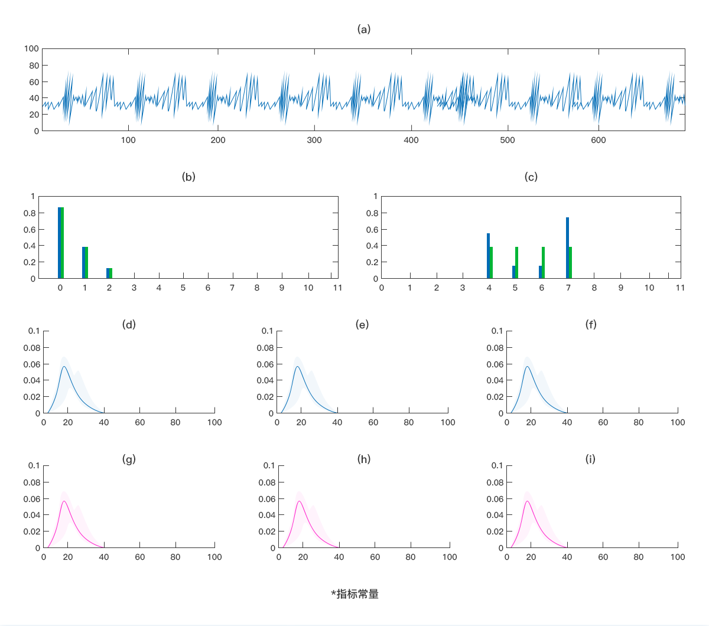
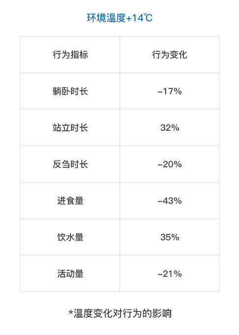
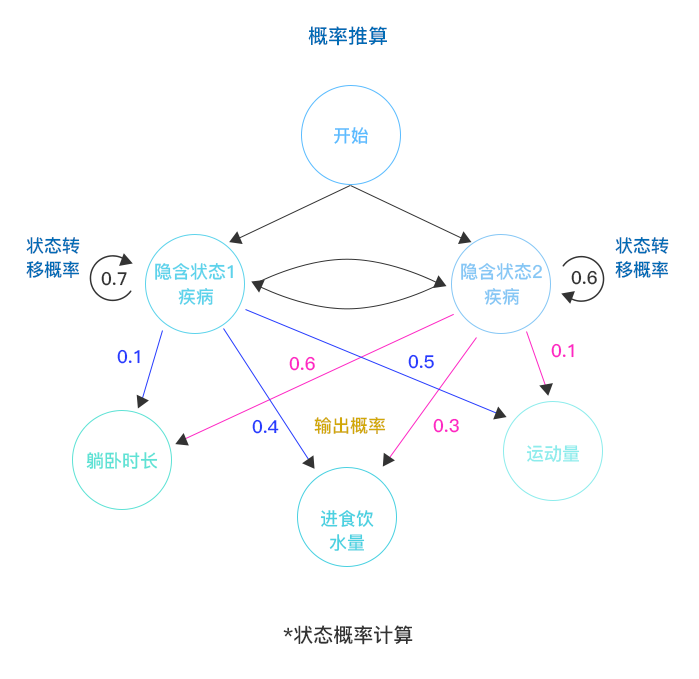

疾病受伤预警的价值The value of early warning of disease and injury
牛是我国养殖业的重要畜牧种类之一，对促进养殖业发展农民增收致富具有重要作用。养殖过程中，牛的疾病和受伤往往会
给养殖户造成损失，严重时会对养殖户造成极大冲击。因此，在饲养过程中，若能做到及早发现、尽早治疗、科学救治，能
将经济损失降到最低。
数据采集Data acquisition
配置多种类传感传输设备，对牛的生命状态进行多维度数据采集。
环境温度
环境湿度
运动量
运动姿态
动物体温
行为轨迹
模型分析Model analysis
通过隐马尔可夫模型（Hidden Markov Model，HMM）进行分析诊断，当牛出现异常情况（如运动量过低、躺卧时间过
长、进食饮水量过少等）及时推送对应的消息预警，提醒养殖人员及时前往处理。由此大幅降低因发现晚、救治不及时而
导致的疾病受伤死亡损失和动物痛苦生命体验。



分析报告Analysis report
除了提供及时发现及时预警的功能 ，对每头牛的健康状态建立牛籍卡（牛的品种、性别、月龄、体况、体重），随时可以查看
牛自出生以来的健康状态和就诊、治疗、用药、康复记录。对牛肉品质的鉴定和评估，起到积极的辅助作用。

异常报警

就诊记录

用药记录

康复记录
定位追踪

轨迹回溯
定制化方案Customized scheme
关于疾病受伤监测创新，可以说全然是以数据采集分析为中心展开的。通过不断优化的技术手段，对牲畜健康异常提供筛查
诊断和预警，规避病疫风险对等的收益价值，并且针对不同类型的养殖户提供针对性的灵活组合解决方案。